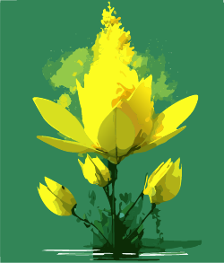
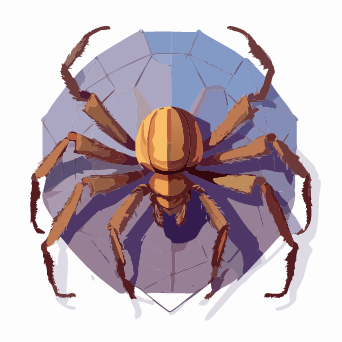
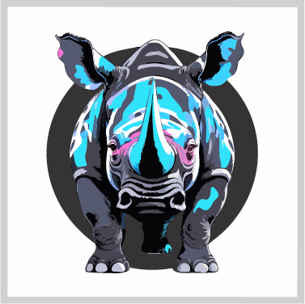

Artículos
Diseño del primer nivel: Zona Verde
Propósito del Nivel:
El primer nivel, "Zona Verde", introduce al jugador a los controles básicos y las mecánicas
fundamentales del juego. Sirve para familiarizar al jugador con el entorno postapocalíptico y
desolado,
así como con el combate y la exploración, que son pilares del juego.
Objetivos del Jugador:
Ensam le indicará al jugador (Sanharak) hacia donde debería de ir. Con esa indicación, el
jugador se
dirigirá a la antena más cercana al campo de batalla donde despertó, con el objetivo de
establecer
contacto con alguien. En el lugar no podrá establecer contacto con nadie, pero la altura en la
que
se
encuentra es favorable, con ello alcanza a divisar las ruinas de lo que parece haber sido una
ciudad
(segundo nivel) para posteriormente dirigirse ahí.
Tema y Ambientación:
El entorno es un paisaje postapocalíptico cubierto de vegetación, donde la naturaleza ha
reclamado
lo
que una vez fueron ciudades. La estética visual mezcla una atmósfera melancólica con tonos
verdes
oscuros y marrones, representando un mundo en decadencia. El ambiente sonoro evoca soledad, con
efectos
de sonido ambientales como el viento, el crujido de plantas y criaturas a lo lejos.
Historia y Narrativa:
El primer nivel nos da una introducción a lo que el jugador se va a enfrentar y a la soledad que
lo
acompañará por el resto de su camino. Con el objetivo del primer nivel de ir a una antena y
buscar
contacto con algún humano, el primer nivel aclarará el objetivo principal de la historia:
“Buscar a
los
humanos”, dando paso a la aventura a la que el personaje principal se tendrá que embarcar.
Mecánicas del Juego en Ensam
Descripción de las Mecánicas Específicas:
- Resolución de puzzles: El jugador deberá resolver una variedad de acertijos para avanzar a través de las diferentes zonas del juego. Estos puzzles están integrados en el entorno y pueden involucrar la manipulación de objetos.
- Combate: El combate es dinámico, combinando ataques cuerpo a cuerpo con habilidades a distancia. Sanharak puede luchar contra enemigos utilizando su cañón de energía, así como técnicas de combate cuerpo a cuerpo, como golpes potentes y evasiones rápidas.
- Interacción con objetos: El jugador puede interactuar con diversos objetos del mundo, desde puertas y paneles de control hasta dispositivos tecnológicos olvidados por el tiempo.
- Exploración: El juego incentiva la exploración de un mundo abierto semi-lineal. Los jugadores se moverán por diferentes entornos postapocalípticos llenos de vegetación y restos de tecnología, buscando recursos, enfrentándose a enemigos y descubriendo la historia del pasado del protagonista.
- Interacción con NPCs: Se interactúa con personajes a lo largo del juego.
Enemigos del Primer Nivel: Insan, Blum y Más
Descripción de Enemigos:
- Insan:

- Habilidades: Se abalanzan sobre el jugador con garras afiladas y ataques rápidos.
- Comportamiento: Movimiento dinámico: Los Insan se mueven rápidamente, atacando en pequeños grupos. Su comportamiento es errático, pero al momento que detectan un robot, su comportamiento se vuelve agresivo.
- Patrones de ataque: Ataques de embestida: Se lanzan rápidamente hacia el jugador en un intento de acorralarlo. Si fallan, necesitan unos segundos para recomponerse, lo que brinda al jugador una ventana de ataque.
- Blum:

- Habilidades: Ataque en Área: Libera esporas venenosas en un área a su alrededor, causando daño continuo al jugador si se queda demasiado cerca.
- Comportamiento: Movimiento Estático: El Blum no se mueve, lo que lo convierte en un enemigo fácil de detectar.
- Patrones de ataque: Activación por proximidad: El Blum detecta al jugador cuando este entra en su área de influencia y comienza a liberar esporas. Estas esporas se dispersan en todas direcciones, lo que obliga al jugador a mantener su distancia.
- Cadencia de ataque: Las esporas se liberan en intervalos regulares, lo que permite al jugador calcular los tiempos de evasión o destrucción del Blum antes de que las esporas lleguen.
- Bocek:

- Habilidades: Ataque a Distancia y Cuerpo a Cuerpo: Disparan pequeñas ráfagas de veneno a distancia y luego se acercan rápidamente para atacar cuerpo a cuerpo.
- Comportamiento: Movimiento dinámico: Los Bocek son extremadamente rápidos, moviéndose a través de túneles y grietas en áreas oscuras. Prefieren atacar desde la distancia antes de abalanzarse sobre el jugador cuando está debilitado.
- Patrones de ataque: Ataques sorpresa: Los Bocek tienden a emboscar al jugador desde las sombras, apareciendo para lanzar su ataque. Suelen atacar en lugares con poca luz, lo que dificulta detectarlos.
- Gate:

- Habilidades: Ataque en área y demoledor: Usa su gran cuerpo para realizar ataques devastadores en área, aplastando al jugador. Irradiación de luz: El Gate emite una luz brillante producto de la radiación, cegando temporalmente al jugador si se encuentra muy cerca.
- Comportamiento: Movimiento dinámico y pesado: Aunque Gate es de gran tamaño, esto no le impide moverse sorprendentemente rápido cuando se enoja.
- Patrones de ataque: Carga y golpe demoledor: El Gate carga en línea recta hacia el jugador, destruyendo cualquier cosa en su camino. Después de esto, se detiene durante un corto periodo de tiempo. Ataques de luz: Cuando Gate irradia luz, no solo puede cegar al jugador, sino que también puede debilitar la salud si el jugador se expone mucho a esta durante un tiempo prolongado.
Obstáculos y Trampas en el Primer Nivel
Obstáculos y Trampas:
- Ruinas en deterioro: Las ruinas del mundo son un obstáculo constante a las que se va a enfrentar el jugador, entre los que están edificios colapsados, escombros y estructuras inestables. Algunos caminos estarán bloqueados por secciones de ruinas que se han desplomado con el tiempo, obligando al jugador a encontrar rutas alternativas.
- Agua contaminada: A lo largo del nivel se encontrará agua contaminada debido a los efectos de la radiación y residuos tóxicos de la guerra. Las zonas con agua contaminada son extremadamente peligrosas para Sanharak, debido a que si cae en esta puede dañar su estructura mecánica, obligando al jugador a buscar una forma de cruzar.
- Blum: Aunque el Blum es un enemigo, su comportamiento estático y su capacidad de generar esporas venenosas lo convierte en una trampa natural. Estas suelen estar camufladas entre la vegetación, haciendo que sean difíciles de detectar a primera vista.
Recogibles y Mejoras en Ensam
Recogibles y Mejoras:
- Chatarra (Monedas): La chatarra es el recurso principal de intercambio en el mundo de Ensam. Está formada por piezas de tecnología antigua y restos de las máquinas y edificios destruidos por la guerra.
- Módulo de cañón (habilidad): Los módulos de cañón son piezas tecnológicas que mejoran las capacidades ofensivas de Sanharak, permitiendo al jugador desbloquear ataques más poderosos.
- Mejoras de estado: Las mejoras de estado son objetos que incrementan las estadísticas principales de Sanharak, como la vida, la energía y la resistencia.
- Fragmentos de memoria (recolectable): Los fragmentos de memoria son ítems coleccionables cruciales para la narrativa de Ensam. Estos fragmentos contienen datos dispersos y ocultos del pasado de Sanharak y de la historia del planeta Kepler-452b. Al recolectar estos fragmentos, el jugador desbloquea partes de la memoria perdida de Sanharak, revelando detalles importantes sobre la guerra, los humanos y la especie nativa del planeta, los Insans.
Ubicación de Recursos Clave:
- Las piezas de chatarra se encuentran dispersas cerca de objetos y ruinas, incentivando la exploración.
- Se pueden encontrar ruinas tecnológicas en las que el jugador podrá recuperar su salud y energía.
- Los fragmentos de memoria suelen encontrarse en zonas donde hubo una batalla.